第23章 共振
§23-1 复数和简谐运动
本章我们将继续讨论谐振子，特别是受迫谐振子，但在分析时将采用一种新的技巧和方法。在前一章中我们引进了复数的概念，它具有实部和虚部，可以在一个图上表示，图的纵坐标表示虚部，横坐标表示实部。如果a 是一个复数，就可写成a =a r +ia i ，其中下标r表示a 的实部，i表示a 的虚部。参看图23-1，我们看到一个复数a =x +iy ，还可以写成x +iy =r ei θ 的形式，这里
r 2 =x 2 +y 2 =（x +iy ）（x -iy ）=a ·a * .
（a 的共轭复数写成a * ，它由改变a 中i的符号而得到）。因此，我们可以把一个复数表示成两种形式：一个实部加一个虚部，或一个模r 和一个叫做辐角的θ 。给定r 和θ ，x 和y 显然是r cos θ 和r sin θ ，反过来，给定一个复数x +iy ，则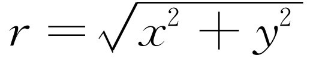 和tanθ =y /x ，即虚部和实部之比。
我们通过下述技巧用复数来分析物理现象。我们以物体的振动为例子，振动可以具有一个其大小等于某一个常数乘cos ωt 的策动力。现在可以把这种力F =F 0 cos ωt 写成复数F =F 0 ei ωt 的实部，因为ei ωt =cos ωt +isin ωt 。我们这样做的原因是因为用指数函数运算要比用余弦函数容易。所以整个技巧就是把振动函数表示成某个复函数的实部。我们这样定义的复数F 不是实际的物理力，因为在物理中没有一个力会是复数；实际的力没有虚部，只有实部。但是，我们将要以F 0 ei ωt 表示“力”，当然实际力是这个表示式的实部。
再来举一个例子。假设我们要表示一个力，它是余弦波，但相位滞后为Δ 。当然，这个力是F 0 ei（ωt -Δ ） 的实部，但根据指数函数本身的性质，我们可以写成ei（ ωt-Δ ） =eiωt e-i Δ 。由此可见，指数的代数运算要比正弦和余弦的运算容易得多，这就是我们选用复数的原因。我们以后将经常用这样的写法
我们在F 上写上小符号（∧）是为了提醒我们，这个量是复数，即在上式中
现在我们用复数来解方程，看看是否能解决实际问题。例如，试解
这里F 是策动振动的外力，x 是位移。我们假定x 和F 是真正的复数，尽管这样做似乎有些荒谬，但这仅仅是为了数学上的目的。这就是说，x 有一个实部和一个虚部乘i，F 也有一个实部和一个虚部乘i。假如式（23.2）有一个复数解，把这个复数代入方程，就得
或
因为若两个复数相等，则它们的实部必须相等，并且 虚部也必须相等，由此可以推知， x 的实部满足只有实部的力的方程 。然而，我们必须强调指出，这种把实部和虚部分开的方法不是 普遍正确的，只有对线性 方程才适用，亦即只对那些每一项中只出现x 的一次幂或零次幂的方程才适用。例如，假如在方程中有一项λx 2 ，当把x r +ix i 代入之后，将得到λ （x r +ix i ）2 ，但在分离实部和虚部时，得到实部为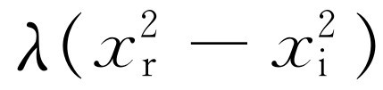 ，虚部为2iλx r x i 。因此，可以看到方程的实部不仅包含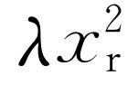 ，还有-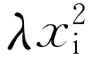 。在这种情况下，我们得到了一个与我们要解的方程不一样的方程，在这个方程中混有x i ，而x i 是我们在分析问题时完全人为引进的一个量。
现在试用我们的新方法来解受迫振子的问题，这个问题怎么解我们已经知道了。像先前那样，我们可以解式（23.2），但在这里我们打算解下面的方程
这里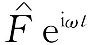 是一个复数。当然，x 也是复数，但要记住一个规则：取实部作为真正发生的解。我们先来求受迫振动式（23.3）的解，以后再讨论其他解。受迫振动的解和所加的策动力具有相同的频率，而且也具有某个振幅和相位，因此，它也可以用一个复数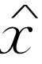 来表示，它的大小表示x 的摆幅，它的相位表示时间上的延迟，与力的相位含义相同。指数函数有一个很奇妙的特征，即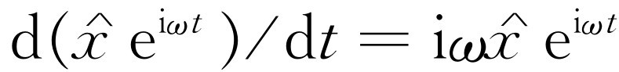 。当对一个指数函数求微商时，只要取指数作为一个简单的乘数。二级微商的情况也一样，再取另一个iω ，因此，观察一下就很容易立即写出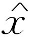 的方程：每微分一次，就简单地乘上iω （微分现在就像乘法一样容易！在线性微分方程中应用指数的想法几乎与发明对数同样伟大，在对数中乘法被加法所代替，这里微分被乘法代替）。这样，我们的方程变成
（我们已经消去了公因子ei ωt ）。看，多么简单！通过观察就立即把微分方程变成了纯粹的代数方程；实际上就能得出解，即
因为（iω ）2 =-ω 2 。把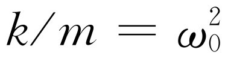 代入，将此式略加简化，即得
当然，这就是我们前面得出的解；由于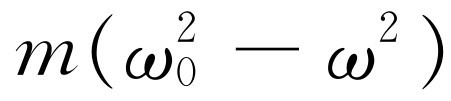
是实数，故 和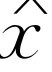
的辐角相同（或者，当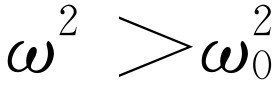
时，可能相差180°），所以就像前面说的一样，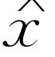
的模——它量度振动有多远——与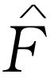
的大小差一个因子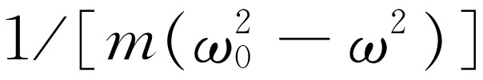
，当ω
接近ω
0
时，这个因子变得非常大。因此，当适当选择外加频率ω
时，我们会得到一个非常强的响应。（假如在弦的一端悬挂一个摆，用一个适当的频率使它摆动，可以摆得很高。）
和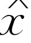
的辐角相同（或者，当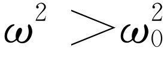
时，可能相差180°），所以就像前面说的一样，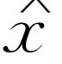
的模——它量度振动有多远——与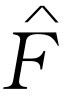
的大小差一个因子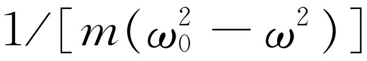
，当ω
接近ω
0
时，这个因子变得非常大。因此，当适当选择外加频率ω
时，我们会得到一个非常强的响应。（假如在弦的一端悬挂一个摆，用一个适当的频率使它摆动，可以摆得很高。）
§23-2 有阻尼的受迫振子
上面，我们用比较优美的数学技巧分析了振动。但是对于那种易于用其他方法解决的问题，这个技巧的优越性是丝毫也显示不出来的。要显示它的优越性，只有把它应用到较复杂的问题上。因此，我们来解另一个更困难的、但也比前一个更具有现实意义的问题。式（23.5）告诉我们，如果频率ω 严格等于ω 0 ，我们应得到一个无限大的响应。当然，实际上，不会有这种无限大的响应出现，因为到目前为止，我们略去了像摩擦等一类使响应受到限制的其他东西。所以让我们在方程式（23.2）上加一个摩擦项。
由于摩擦这一项的特征和复杂性，这个问题通常是非常困难的。但是，在很多情况下，摩擦力与 物体的运动速度成正比 。一个物体在油或很浓的液体中作低速运动时的摩擦就是这种摩擦的一个例子。在物体静止时，没有作用力，但物体运动得越快，油必须让物体尽快通过，产生的阻力也就越大。因此，除了式（23.2）中几项外，我们认为还应加上一个与速度成正比的阻力项：F f =-cdx /dt 。把常数c 改写为m 乘γ 可使方程略为简化。这样，在我们的数学分析中就会方便一些。这和我们用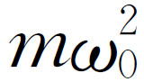 代替k 使代数运算简化的技巧完全相同。这样，方程变成
或取c =mγ 和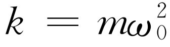 ，再用质量m 去除式（23.6）就得
现在我们已经把方程写成了最便于求解的形式。如果γ 非常小，就表示摩擦很小；如果γ 很大，则表示有很大的摩擦力。我们怎么来解这个新的线性微分方程呢？假设，策动力等于F 0 cos（ωt +Δ ）；我们可以把它代入式（23.6a）去试着求解，但是我们不这样做而改用新的方法来解此方程。为此我们把F 写成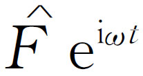 的实部，x 写成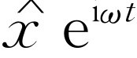 的实部，并把它们代入方程（23.6a）中。其实，连这种代换也不必要，因为通过观察我们就能看出方程将变成
［事实上，如果试用我们老的直接求解的方法去解方程式（23.6a），我们就会真正体会到“复数法”的妙处］。两边除以ei ωt ，就能得出对给定的力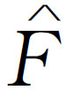 的响应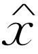 ，即
于是又得出了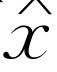 等于 乘上一个确定的因子。这个因子没有专门术语，也没有专门符号，但是为了讨论方便起见，我们令它为R
于是
（虽然字母γ 和ω 0 被广泛采用，但R 没有特别名称）。这个因子R 可以写成p +iq ，或某个模ρ 乘ei θ 。如果写成某个模乘e θ i 的形式，让我们来看看它表示什么意思。这里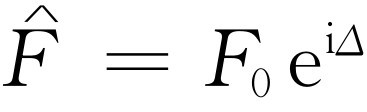 ，而实际的力是F0 ei Δ ei ωt 的实部，即F 0 cos（ωt +Δ ）。其次，式（23.9）告诉我们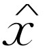 等于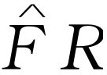 。因此，作为R 的另一个表示法，写出R =ρ ei θ ，我们就有
最后，追溯得更远一些，我们看到作为复数 的实数部分的物理量x ，等于ρF 0 ei（ θ + Δ ） ei ωt 的实部。但ρ 和F 0 是实数，而ei （ θ+ Δ + ωt ） 的实部就是cos（ωt +Δ +θ ）。因此
x =ρF 0 cos（ωt +Δ +θ ）.（23.10）
由此可知，响应的振幅是力F 的幅值与某一放大因子ρ 的乘积；它给出了振动的幅度。但是，它还告诉我们，x 的振动与力不是处于同一相位的，力的初始相位是Δ ，而x 则还要再移过一个额外的量θ 。因此，ρ 和θ 表示响应的大小和响应的相移。
现在，我们来计算ρ 。我们知道一个复数模的平方等于这个复数乘它的共轭复数，即
此外，相角θ 也容易求出。因为如果写出
我们看到
故θ 是负值，因为tan（-θ ）=-tanθ 。对所有的ω ，所得的θ 均为负值，这相应于位移x 落后于力F 。
图23-2表示ρ 2 作为一个频率的函数变化的情况（ρ 2 在物理上比ρ 更有用，因为ρ 2 与振幅的平方成正比，或多或少与力加到振子上产生的能量 成正比）。我们看到，若γ 很小，则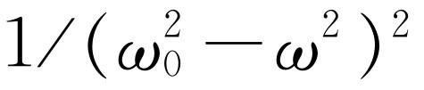 是最重要的项，当ω 等于ω 0 时，响应趋于无限大。这里的“无限大”不是真正的无限大，因为如果ω =ω 0 ，那么1/ γ2 ω 2 依然存在。相移的变化如图23-3所示。
图23-2 ρ2对ω的关系图
图23-3 θ对ω的关系图
在某些情况下，我们得到一个与式（23.8）略有不同的公式，它也称为“共振”公式，人们可能会认为它代表另一种现象，但实际上并非如此。原因是，如果γ 很小，曲线的最有意义的部分是ω =ω 0 附近的部分，因此我们可以用一个近似公式来代替式（23.8），当γ 很小且ω 接近ω 0 时，这个近似公式是非常正确的。因为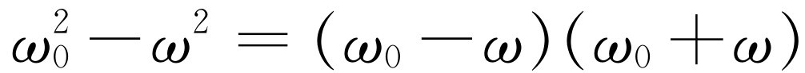 ，如果ω 接近ω 0 ，上式接近于2ω 0 （ω 0 -ω ），而γω 又接近于γω 0 。把这些关系用到式（23.8），我们看到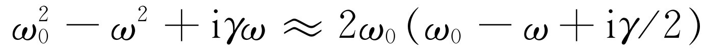 ，因此
很容易求出ρ 2 的相应公式。它是
我们将留给读者去证明如下事实：如果将ρ 2 -ω 曲线的最大高度称为1个单位，我们要求出在最大高度一半处曲线的宽度Δω ；假定γ 很小时，曲线最大高度一半处的全宽度是Δω =γ 。当摩擦的影响越来越小时，共振越来越尖锐。
有人用一个定义为Q =ω 0 /γ 的量Q 作为宽度的另一种量度。共振越窄，Q 就越高；Q =1 000的意思是说，这个共振的宽度只有频率的千分之一。在图23-2所示的共振曲线中Q 是5。
共振现象的重要性在于它在很多其他情况中也会出现，因此，本章的其余部分将描述其他一些共振情况。
§23-3 电共振
共振的最简单和最广泛的技术应用是在电学方面。在电学世界中，有很多能够连接成电路的装置。通常所说的无源电路元件 有三种主要类型，虽然其中的每一种都混有少量的另外两种元件。在详细叙述它们之前，我们必须注意由悬挂在弹簧一端的物体构成的机械振子的整个概念只是一种近似。所有的质量并不真正集中在“物体”上，有些质量表现为弹簧的惯性。同样，全部弹性也并不集中在“弹簧”上，物体本身也有一点点弹性，虽然它看来很像一个刚体，但不是绝对 刚性的，当它上下运动时，在弹簧拉力的作用下会有一点弯曲。在电学中情况也一样。作为一种近似，我们可以将一些东西归结为“电路元件”，并假定它们具有纯粹的理想特性。现在讨论这种近似还不是时候，我们先简单地承认在目前的情况下它是正确的。
三种主要的电路元件如下：第一种是电容器 （图23-4），将两块金属平板用绝缘物质分开一个很小的距离就是一个例子。当金属板充电后，在两块板之间就有一定的电压降，亦即有一定的电位差。在端点A和B之间出现相同的电位差，因为如果沿着相连的导线有任何电位差的话，电荷会立即流动。因此，如果两块板分别具有电荷+q 和-q ，它们之间就有一定的电位差V 。于是两块板之间将存在某一电场，对此我们已经得出过一个公式（见第13章和第14章）
V =σd/ ε0 =qd/ ε0 A ，（23.14）
图23-4 三个无源电路元件
这里d 是两块板的间距，A 是板的面积。注意，电位差是电荷的线性函数。如果不是平行板，而是任意形状的绝缘电极，其电位差仍然严格地和电荷成正比，不过比例常数可能不大容易计算。但是，我们需要知道的只是电容器两端的电位差与电荷成正比 :V =q /C ；比例常数是1/C ，这里的C 就是物体的电容 。
第二种电路元件叫做电阻器 ，它起着阻碍电流流动的作用。已经证明金属导线和许多其他物质都以如下方式阻碍电荷流动：如果某段物质的两端有一电压差，就有电流I =dq /dt ，它与电压差成正比
V =RI =R dq /dt .（23.15）
比例系数叫做电阻R 。可能你对这个关系式已经很熟悉，它就是欧姆定律。
假如我们把电容器上的电荷q 类比为力学系统的位移x ，可以看到，电流I =dq /dt ，它相应于速度，1/C 相应于弹性系数k ，R 相应于电阻系数γ 。十分有趣的是还存在另一个与质量相对应的电路元件！这是一个线圈，当线圈内有电流时，在它内部就建立了磁场。变化的 磁场在线圈内产生电压，电压的大小与dI /dt 成正比（实际上，这就是变压器的工作原理）。磁场与电流成正比，在这种线圈内的（所谓）感生电压与电流的变化率成正比
V =L dI /dt =L d2 q /dt 2 .（23.16）
系数L 是自感 ，它与机械振动回路系统中的质量相对应。
假设我们把这三个电路元件串联成一个电路（图23-5），则加在从1到2整个回路两端的电压就是在回路中移动单位电荷所做的功，它等于几部分电压之和：在电感器两端的V L =L d2 q /dt 2 ；在电阻两端的V R =R dq /dt ；在电容器两端的V C =q /C 。它们的和等于外加电压V
L d2 q /dt 2 +R dq /dt +q /C =V （t ）.（23.17）
这个方程式与力学方程式（23.6）完全一样，当然可以用完全相同的方式来解。假设V
（t
）是振荡的：我们用一个纯正弦波振荡发生器来驱动电路。于是就能把V
（t
）写成一个复数
，只须理解为若要求真正的V
，则最后必须乘上ei
ωt
，再取它的实部即可。同样，电荷q
也能这样分析，于是完全和处理式（23.8）的方法一样，我们写出相应的方程式： 的两次微商是
，一次微商是
。这样，方程式（23.17）就变成
的两次微商是
，一次微商是
。这样，方程式（23.17）就变成
或
还可以把它写成如下形式
这里 ，γ =R/L 。式（23.18）中的分母与力学的情况完全相同，因而具有完全相同的共振性质！电学和力学情况的对应关系列于表23-1中。
表23-1
我们必须指出一个小的技术性问题。在电学文献中，常采用不同的符号（从一个领域到另一个领域，课题实际上没有任何不同，但是书写符号的方式常常不同）。首先在电工中常用j代替i来表示 （这是因为i 必须用以表示电流）。此外，工程师喜欢利用 和 的关系式，而不大采用 和 的关系式，这是因为他们对前一种方式更习惯一些。因为 ，所以我们能用 代替 ，并得出
另一个做法是改写式（23.17），使它变成更熟悉的形式。即可写为
无论如何，我们找到的电压 和电流 之间的关系式（23.19），除了被iω 去除之外，和式（23.18）完全一样，这样就得出了式（23.19）。量R +iωL +1/（iωC ）是一个复数，在电工上应用得很多，以致有一个名称，叫做复阻抗 。于是我们就可以写成 。工程师喜欢这样做的原因是因为在他们年轻时，只知道电阻和直流电，对于电阻他们学过V =RI 。现在，他们受到更多的教育，知道了交流电路，然而还想看到同样的等式。因此，他们写出 ，唯一的区别是电阻被一个更复杂的复数的量所代替。因此，他们坚持不能采用世界上其他人都采用的表示虚数的形式，而要用一个j来表示，但奇怪的是他们并没有坚持把字母Z 也写成R （于是在讨论电流密度时，他们就遇到了麻烦，因为电流密度也用j 表示。科学的困难在很大的程度上不是来自于自然界，而是来自于符号、单位和所有其他人们所发明的人为事物造成的困难）！
§23-4 自然界中的共振现象
虽然我们详细讨论的是电学的情况，但也能够在很多领域里举出一个又一个例子，用来说明其共振方程的确是何等的一致。在自然界中存在着很多发生“振动”和共振的情况。在前面某一章中我们曾讲起过这类情况，现在我们来加以证明。如果我们在书房里踱步，从书架上取出一些书，去找找看有没有一个来自相同的方程，且能画出像图23-2那样曲线的例子，我们会发现什么呢？只要查阅五六本书，就能找到一系列显示共振的现象，这些少量的现象足够说明共振所涉及的范围之广。
最初两个例子来自于力学，第一个现象是大规模的，即整个地球的大气层。我们认为整个地球由大气层均匀地包围着，如果大气被月亮吸引到一边，或更确切地说，被拉扁成双潮汐，那么让它这样下去，它就会继续上下涨落，这就是一个振子。这个振子是由月亮驱动 的，实际上月亮绕着地球转动，策动力的任何一个分量，比如说，在x 方向上的分量，是一个余弦分量，因此地球的大气层对月亮的潮汐拉力的响应是一个振子的响应。预期的大气响应如图23-6中曲线b所示（曲线a是所引的那本书中讨论过的另一条理论曲线）。现在，人们可能会认为，在这条共振曲线上只有一点，因为与在月亮作用下的地球的转动相应的频率只有一个，它转动的周期为12.42 h——12 h是由于地球的转动（潮汐是两个隆起部分）。由于月亮也在转动，还要加上一点。但是从大气潮汐的大小 和相位 （即推迟的数量）来看，我们能同时得出ρ 和θ 。由此又可得出ω 0 和γ ，从而画出整条曲线！这是一个非常蹩脚的科学例子。我们从两个数得出两个数，再从那两个数画出一条漂亮的曲线，它当然正好通过决定曲线的那个点。除非我们能够测量某些其他量 ，否则这条曲线是毫无用处的，而对地球物理学来说，这通常又是非常困难的。但在这个特殊情况中，可以从理论上证明，一定还有与固有频率ω 0 同样计时的东西：那就是，如果能扰动大气层，它就会以频率ω 0 振动。1883年曾发生过一次激烈的扰动，喀拉喀托 [1] 火山爆发时，将半个岛屿掀掉了，在大气中造成了一次如此可怕的爆炸，使得能够测量出大气的振动周期。得出的结果是10.5 h，从图23-6得出的ω 0 是10.20 h，于是我们至少找到了一个验证对大气潮汐理解的真实性的数据。
下面我们将研究小尺度的机械振动。这次我们取氯化钠晶体，在前面的一章中我们曾描述过，氯化钠晶体中，钠离子和氯离子是一个接一个地排列着的。钠离子带正电，氯离子带负电。现在有可能存在一种有趣的振动。假定我们把所有的正电荷赶到右边，把所有的负电荷赶到左边，然后任其运动，这样钠晶格相对氯晶格就会来回振动。怎样才能造成这种情况呢？这很容易，如果在晶体上外加一个电场，电场会把正电荷推向一边，而把负电荷推向另一边。因此，通过引进外加电场，我们或许能够使晶体振动。但是所要求的电场频率很高，它相应于红外辐射 ！因此，我们可以通过测量氯化钠对红外光的吸收来找出一条共振曲线。图23-7所示就是这样的一条曲线。横坐标不是频率，而是波长，但这仅仅是一个技术问题，因为对于波来说，频率和波长之间有确定的关系，因而它实际上也是一种频率的标度，而某一个确定频率与共振频率相对应。
图23-7 通过一个薄氯化钠膜（0.17 μ m）的红外辐射透射
（转载自Barnes R B. Z Physik , 1932, 75 : 723; Kittel C. Introduction to Solid State , Physics . New York: Wiley, 1956）
但是，宽度有多大？由什么来确定宽度呢？在很多情况下，曲线上所看到的宽度实际上并不是理论上应有的固有宽度γ 。为什么会有较理论曲线更宽的曲线呢？这有两个原因。第一，如果晶体的某个区域发生应变，则晶体的不同部分可能不都具有相同的频率，因此，在这些区域中振动频率与其他区域相比略有不同，这时我们就具有许多彼此靠得很近的共振曲线，于是，看上去曲线就比较宽。第二个原因是这样的：或许我们不能足够精确地测量出频率——假如我们把分光计的狭缝开得相当宽，尽管我们认为只有一种频率，实际上则有一个范围Δω ，于是我们并没有足够的分辨率去观察一条窄的曲线。因此，我们不能随便讲图23-7的宽度是否是自然的，还是由晶体中的不均匀性或分光计狭缝的一定宽度所引起的。
现在转而研究一个比较深奥的例子，这就是磁铁的振动。如果把一个带有南、北极性的磁铁放在一个恒定的磁场内，磁铁的N端将被推向一方，而S端则被推向另一方，一般说来有转矩作用在磁铁上，因此，它将在平衡位置附近振动，就像罗盘的指针那样。但是，我们所说的磁铁指的是原子 。这些原子具有一个角动量，转矩并不产生沿着场的方向的简单运动，而显然会产生进动 。现在，从旁边来观察时，可以看到任何一个分量都在“摆动”，我们可以扰动或驱动这种摆动，并测量吸收。图23-8中的曲线表示一个典型的这类共振曲线。这里所做的在技术上稍有差别。现在，用以驱动这种摆动的横向场的频率总是保持不变，虽然我们曾预料研究者们会改变它而画出曲线来。他们可以这样做，但是在技术上更容易做的是让频率ω 固定，改变恒定磁场的强度，这相当于在我们的公式中改变ω 0 。他们画出相对于ω 0 的共振曲线。不管怎样，这是具有某一确定的ω 0 和γ 的典型共振。
图23-8 在顺磁有机化合物中，磁能损失与外加磁场强度的关系
（转载自Holden A N, et al . Phys Rev , 1949, 75 : 1614）
现在我们再进一步讨论下去。下一个例子与原子核有关。原子核中的质子和中子以某种方式作振动，这可以用下面的实验来证实。我们用质子轰击一个Li原子，发现产生γ 射线的某种反应，实际上是具有一个非常尖锐的极大的典型共振。但是，在图23-9中，我们看到和其他情况有一个不同：水平标度不是频率，而是能量 ！原因是在量子力学中，经典能量的含义实际上与波振动的频率有关。如果我们分析某个在一般宏观物理学中与频率有关的事物时，我们发现在用原子物质做量子力学实验时，得到的是相应的作为能量函数的曲线。实际上，从某种意义上来说，这条曲线就是这种联系的一个证明。它表明频率和能量之间有某种深刻的内在联系，当然，事实上也是如此。
图23-9 从Li原子中射出的γ 射线强度与轰击质子能量的关系。虚线是对角动量l =0的质子进行计算时得出的理论曲线
（转载自Bonner T W, Evans J E. Phys Rev , 1948, 73 : 666）
现在我们再来研究另一个与原子核能级有关的例子，不过它是很窄很窄的。在图23-10中，ω 0 相当于100 000 eV的能量，而宽度γ 大致为10-5 eV；换句话说，Q 为1010 ！当这条曲线被测定时，它是所有已经测定的振子中Q 值最大的。这是由穆斯堡尔博士测出的，这奠定了他获得诺贝尔奖的基础。在这里水平标度是速度，因为要获得相差很小的频率的技术是采用源相对于吸收体运动的多普勒效应。当我们知道所包含的速度只有每秒几厘米时，人们就会感到这个实验是多么精巧！在图中的实际标度下，零频率相应于左边约1010 cm处的一个点——有些超出纸面了！
图23-10 （承穆斯堡尔博士同意提供）
最后，我们来看一下某一期《物理评论》（Physics Review ）杂志，比方说是1962年1月1日出版的那一期，我们能看到共振曲线吗？每期中都有这条曲线，图23-11就是这一期里的共振曲线。这条曲线是很有趣的。这种共振是在一些奇异粒子间的某种反应中发现的，在这个反应中一个K-介子和一个质子相互作用。这种共振是通过观察放出来的某种粒子数目的多少来探测的，它依赖于放出粒子的数目和放出的是什么粒子，我们得到不同的曲线，但是这些曲线有相同的形状，并且峰值出现在相同的能量处。因此，我们确认对K- 介子，在某确定能量时存在着共振。这可能意味着，有某种状态或条件相应于这种共振，把一个K-和一个质子放在一起就能得到这种状态或条件。这是一种新的粒子或共振。今天，我们还不知道是否能称这样的突起部分为“粒子”，还是干脆就叫共振。当有一个非常尖锐 的共振时，就相应于一个非常确定的能量 ，就好像有一个粒子以这种能量存在于自然界中一样。当共振变宽的时候，我们就不知道是否应该说存在一个寿命不长的粒子，或者仅仅说在反应概率中存在着一个共振。在第2章中讲到粒子时，这一点已经提起过，但在写第2章时，还不知道这个共振，因此在我们的基本粒子表中还应该加上另一个粒子！
图23-11 动量与反应截面的依赖关系（a）K- +p→Λ+π + +π - 和 。在（a）和（b）中下面的曲线代表假定的非共振背景，而上面的曲线是在背景上再叠加共振
（转载自Ferro-Luzzi M, et al . Phys Rev Lett , 1962, 8 : 28）